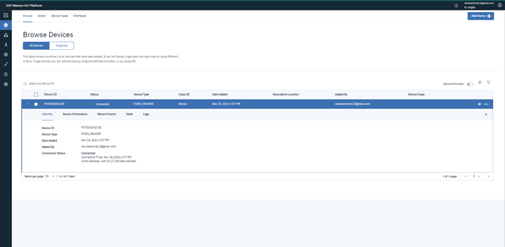
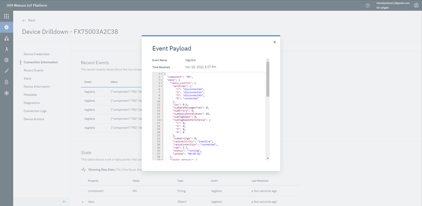
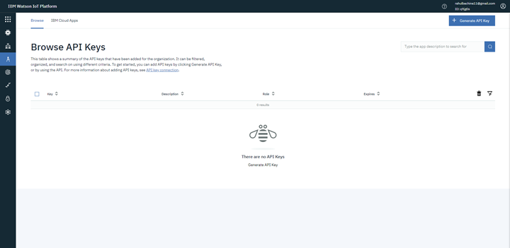
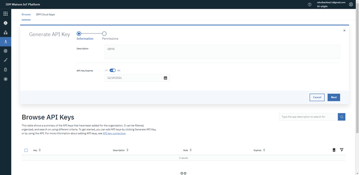
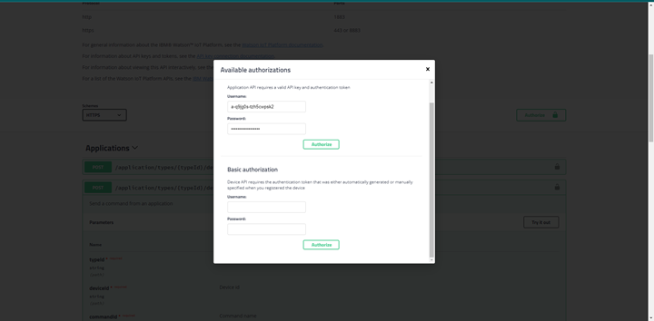
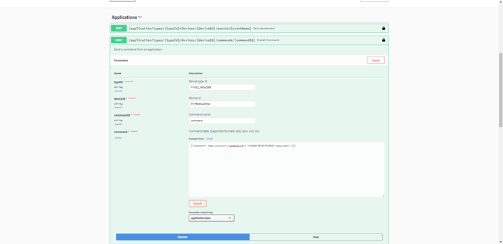
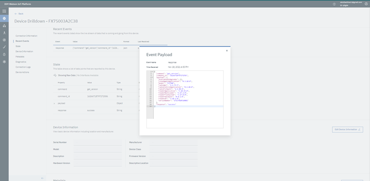
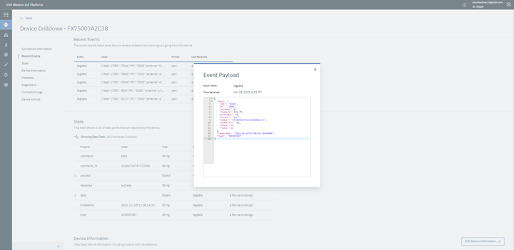

Test Reader Connection To Cloud¶
Device connection status can be viewed from IBM Watson IoT Platform Console.
Check Recent Events for Heartbeat events coming to cloud from device to
Asynceventstopic.For sending commands to device, we have to use IBM Watson IoT Platform HTTP Messaging API Publish command API.
To access the API, we have to generate API keys. Navigate to APPs and click
Generate API Key.Provide description and choose expire time.
Choose
Backend Trusted Applicationfor Role and save the apikeys generated securely.
Goto
Swagger UIat below location. Org_id is the organization ID for Watson IoT Platform and click tryout and enterUsernameandPasswordcopied from previous step and clickAuthorize.https://org_id.internetofthings.ibmcloud.com/docs/v0002/http-messaging.html#/
Send command to device by navigating to
Publish Command APIand Click tryout.Example Command to retrieve device firmware versions:
Response will be sent as device Events.
start/stoptag read events.command to start tag reads.
{ "command": "start", "command_id": "16266718797272556", "payload": {} }
command to stop tag reads.
{ "command": "stop", "command_id": "16266718797272556", "payload": {} }
Important
For full set of supported commands refer RAW MQTT Payload Schemas section.